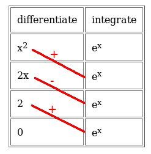

The tabular method for integration by parts
 Integration by parts is a method for integrating products
that strikes fear into the hearts of students. It's not that it's
conceptually difficult -- the governing formula can be derived
from the product rule in about two lines of algebra. No: what makes
it so feared is the complexity of the working when it is applied in
practice, and the corresponding potential for trivial errors.
Integration by parts is a method for integrating products
that strikes fear into the hearts of students. It's not that it's
conceptually difficult -- the governing formula can be derived
from the product rule in about two lines of algebra. No: what makes
it so feared is the complexity of the working when it is applied in
practice, and the corresponding potential for trivial errors.
The problem
The formula for integration by parts is typically written like this, although there are alternative formulations that amount to the same thing:
$$ \int uv dx = uv - \int v \frac{du}{dx} dx $$Methodologically, we choose one of the terms in the product we wish to integrate to be u and one to be v, then we apply the formula and hope that we end up with something that either has no integral term at all or, at least, has an integral term we actually know how to integrate. It helps to pick the u term to be something that will reduce to a lower order when differentiated because, if you differentiate it enough terms it will reduce to zero, and zero is something that even I can integrate.
In practice, unless we can get the answer in one step or, if we're feeling very lucky, two steps, it's not going to work. Conceptually, we can apply the process as often as we like but, if we haven't eliminated the integral after two steps, we're going to have an expression the takes a whole sheet of paper to write down.
The solution
There is a method for tabulating the intermediate steps in integration by parts that radically simplifies the computation. It does not change the process in any way, nor does it introduce any new concepts. It simply organizes the terms into a neat, manageable table. As in the long-hand method, you must decide in advance which of the two terms of the product you wish to integrate, and which to differentiate. As in the long-hand method, a mistake here will lead to failure, but you'll have the advantage of finding out more quickly. I did not invent this method, and it isn't particularly new. However, it's not routinely taught to students which is a shame, because it saves an awful lot of frustration. I will first illustrate the method using a simple example. Even this example will require two applications of the integration by parts formula, and can easily be done wrongly, even by somebody who understands the theory. Let's calculate $$ \int x^2 e^x dx $$We start by writing the two terms of the integral in tabular form, under the headings "differentiate" and "integrate". The columns must be in this order, or all the signs come out wrong. We write the term we plan to differentiate in the left column, and the term we plan to integrate in the right column. So far, we have this:
| differentiate | integrate |
| x2 | ex |
Next, we perform the actual differentiation of the right-hand term, and the integration of the left hand term, and write the results under the existing columns. So we have:
| differentiate | integrate |
| x2 | ex |
| 2x | ex |
Note that the right-hand column has not changed -- the integral of ex is just ex. Why we don't have to worry about the constant of integration here is left as an exercise for the reader :) (Hint: do it long-hand, and watch as those suckers cancel).
Now we repeat the process until one column or the other ends up as zero. There's no point proceeding beyond this point, because once you're multiplying by zero, the total isn't going to get any bigger.
| differentiate | integrate |
| x2 | ex |
| 2x | ex |
| 2 | ex |
| 0 | ex |
Now for the crucial part. Draw lines from each cell on the left, to the one directly below it on the right. So the top-right cell is unconnected, as is the bottom-left cell. Then write signs "+" and "-" going down the row of lines. The top line is a "+", the next a "-", and so on. So now we have this:

Now we have enough information to calculate the final result. Multiply all the terms connected by lines, and apply the sign written on the line. That is, multiply by -1 whenever the sign is "-". So, taking the top-most line (with sign "+") we have x2ex. The next line down, with sign "-", gives us 2xex, but we must negate it, so overall this term is -2xex. The final term is positive, 2ex.
Summing the three terms together, and having regard for the signs, we end up with
$$ \int x^2 e^x dx = x^2 e^x - 2x e^x + 2 e^x + C $$or, more concisely,
$$ \int x^2 e^x dx = (2 - 2x + x^2) e^x + C $$Note how I've craftily sneaked the constant of integration back in here.
Let's take a more complicated example. As we shall see, the procedure is methodologically exactly the same, but handling the signs can be a little fiddly. Let's calculate
$$ \int (x + 1)^3 sin x dx $$As before, we choose to differentiate the polynomial term, because we know it will eventually differentiate to zero. sin(x) is trivially simple to integrate. So we start the table:
| differentiate | integrate |
| (x+1)3 | sin x |
Then perform the integrations and calculations down the rows just as before -- being very careful about the signs of the integrals of the trigonometric functions. Students frequently go wrong here, and so do I. I will skip the intermediate steps; the final table is:
| differentiate | integrate |
| (x+1)3 | sin x |
| 3(x+1)2 | -cos x |
| 6(x+1) | -sin x |
| 6 | cos x |
| 0 | sin x |
Now apply the crucial step. As before, join cells upper-left to lower-right, and label them alternately "+" and "-" starting at the top. We end up with this:
Constructing the solution is exactly as before, except this time we have to be really, really careful about the signs. The first term is negative, because we have a "+" on the line, but one of the terms is itself negative, so the product of the terms is negative. The second term is positive, because the sign on the line is negative, and the product of the terms is also negative. Proceeding (carefully) down the table, we end up with
$$ \int (x + 1)^3 sin x dx = -(x+1)^3 cos x + 3(x+1)^2 sin x + 6(x+1) cos x - 6 sin x + C $$Closing remarks
One very nice feature of this method, if you're prone to making trivial errors of computation as I am, is that the integrals and differentials are set out neatly in a table. So, once you've integrated your way down the right-hand column, you can differentiate up the same column and see if you end up where you started. Similarly, you can integrate up the left-hand column, if the integrals are the kind that can readily be calculated.
The tabular method has many limitations, but they are precisely the same limitations that integration by parts itself has. Most obviously, the process has to stop somewhere, or you end up with an infinite sum. There are a few cases where the tabular method, being completely mechanical, misses a solution that a long-hand application of integration by parts will find -- unfortunately, you can't safely assume that integration by parts will be ineffective just because you can't do it entirely mechanically.
Another limitation, I guess, is that it's difficult to use the tabular method to demonstrate your working in an examination -- unless the examiner is also familiar with the method. However, it's relatively easy to learn how to translate the table into a full-blown solution if you really have to. If you can't do that, you can at least use the tabular method to check the solution you arrived at long-hand -- the tabular solution is far more likely to be correct.
Sadly, tabulation does not relieve us of the need to take care when multiplying terms with different signs: it's still all too possible to make trivial mistakes.
And finally: it's possible to "prove" that this method gives the same result as a full application of integration by parts. But if you use tabulation and the long-hand method on the same problem, it's easy to see intuitively that you're performing exactly the same computation.